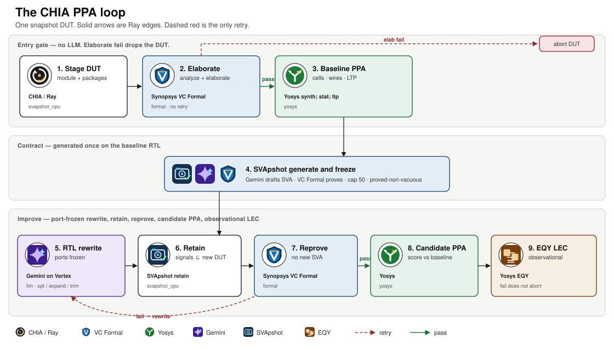

Snapshot-gated RTL rewrite: optimise, expand, and trim
Claim
One frozen SVA snapshot is enough to run three rewrite modes on the same DUT. Both better PPA with a passing snapshot and a failing snapshot on the new RTL are headline results — not only the first.
Method
Stage DUT (+ match_instance parent defaults) → VC Formal elaborate (hard gate) → Yosys baseline → SVApshot generate/freeze → for each mode: Gemini rewrite → retain → reprove → Yosys candidate → score. Observational EQY LEC if the snapshot passed. The only back-edge is reprove → rewrite on optimise.

Optimise: top vs hierarchy
On fpnew_top, top may rewrite only fpnew_top.sv. Hierarchy may rewrite children (opgroup, FMA, DivSqrt). Same snapshot, different blast radius.
| Setting | Scope | Base | Cand. | Snap |
|---|---|---|---|---|
| Default cvFPU, DivSqrt blackbox | Top | 99,959 / 200 | 100,544 / 198 | 17/30 fail |
Sargantana i_fpuv_top + C910 RTL |
Top | 74,070 / 108 | — | generate running |
| Either | Hierarchy | — | — | not packaged |
Do not mix the two baselines: Features / Implementation / DivSqrt RTL differ. The blackbox top pass barely moved PPA and lost the snapshot after three retries.
Results — three modes, two Sargantana leaves
div_unit baseline 9,257 cells / LTP 243. ptw baseline 2,813 / 22. Snapshot = retained properties that proved after rewrite.
| DUT | Mode | Cells | Δ | LTP | Snapshot | Headline |
|---|---|---|---|---|---|---|
| div_unit | Optimise | 6,531 | −29% | 243 | 30/30 pass | better PPA, passing snapshot |
| div_unit | Expand | 10,307 | +11% | 245 | 30/30 pass | snapshot holds, no PPA win |
| div_unit | Trim | 6,556 | −29% | 242 | 13/13 pass (17 dropped) | better PPA, passing snapshot |
| ptw | Optimise | 2,858 | +1.6% | 22 | 43/43 pass | snapshot holds, no PPA win |
| ptw | Expand | 3,148 | +12% | 22 | 0/43 fail | failing snapshot on new design |
| ptw | Trim | 582 | −79% | 13 | 0/37 fail | failing snapshot on new design |
Packaged in hackathon/results/. Gemini 3.1 Pro except div_unit trim (2.5 Pro). mul_unit generate was 0/50 snapshot-worthy — omitted.
How to read a cell
- Green Δ + passing snap — snapshot-pass PPA wins:
div_unitoptimise (30/30) and trim (13/13). - Passing snap, worse or flat PPA — the rewrite was legal and useless for area/delay (
ptwoptimise,div_unitexpand). - Red snapshot — new RTL left the contract. Expected on trim/expand; a problem if optimise wanted a win.
EQY LEC is observational. Functional gold for the graph is the snapshot.